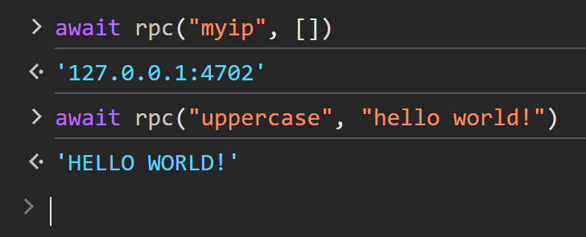
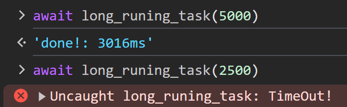

web-socket-io
It provides a robust framework for real-time communication over WebSocket, inspired by Socket.IO. It simplifies the process of sending and receiving messages while offering built-in support for cancellation and timeout functionalities.


Features
- Request/Response: clients to send requests and receive responses from the server.
- Cancellation: mechanisms to cancel ongoing operations on requests.
- Bi-directional Notifications: allowing both clients and servers to notify each other of events instantly. similar to Socket.IO
Learn More
- Tutorial - Step-by-step guide to get you started.
- Protocol Design - Overview of the protocol used for communication.
License
This project is licensed under the MIT License.
Tutorial
This tutorial demonstrates how to set up a basic server using the Rust web framework axum, along with axum-socket-io for real-time communication.
You can find the full source code for this tutorial here.
Setup
- Initialize a new Rust project
cargo new <project-name>
cd <project-name>
- Add dependencies to
Cargo.toml:
[dependencies]
tokio = { version = "1", features = ["full"] }
axum = "0.7"
axum-socket-io = "0.1"
Server Implementation
In the src/socket.rs file, write the following code:
use axum_socket_io::SocketIo;
use std::net::SocketAddr;
pub async fn handle_socket(mut socket: SocketIo, addr: SocketAddr) {
println!("A user connected: {addr:#?}");
while let Ok(_ev) = socket.recv().await {
// ...
}
println!("user disconnected: {addr:#?}");
}In the src/main.rs file, write the following code:
mod socket;
use axum::{
extract::ConnectInfo,
response::{Html, IntoResponse},
routing::get,
Router,
};
use axum_socket_io::SocketIoUpgrade;
use std::{io, net::SocketAddr};
use tokio::net::TcpListener;
#[tokio::main]
async fn main() -> io::Result<()> {
let app = Router::new()
.route("/", get(|| async { Html(include_str!("../index.html")) }))
.route("/socket", get(ws_handler));
println!("listening on http://127.0.0.1:3000");
axum::serve(
TcpListener::bind("127.0.0.1:3000").await?,
app.into_make_service_with_connect_info::<SocketAddr>(),
)
.await
}
async fn ws_handler(ws: SocketIoUpgrade, info: ConnectInfo<SocketAddr>) -> impl IntoResponse {
ws.on_upgrade(16, move |socket| socket::handle_socket(socket, info.0))
}Client Code
In your project directory, create an index.html file with the following
content:
<script type="module">
import { SocketIo } from "https://esm.sh/client-socket-io@0.1.0";
const socket = new SocketIo("ws://127.0.0.1:3000/socket");
await socket.connect();
alert("Hello, World!")
</script>
Running the Project
- Build and run the Rust server:
cargo run
- Go to
http://127.0.0.1:3000, and you should seeHello, World!
Notify events
The Notify events enables bi-directional, event-based communication between clients and servers. This allows both sides to send and receive notifications without waiting for a response.
Server-Side Example (Rust)
Let's walk through a basic "Ping-Pong" example, where the client sends a
"ping" notification to the server, and the server responds with a "pong"
echoing back the same data received.
use axum_socket_io::{Procedure, SocketIo};
use std::net::SocketAddr;
pub async fn handle_socket(mut socket: SocketIo, addr: SocketAddr) {
println!("A user connected: {addr:#?}");
while let Ok(ev) = socket.recv().await {
match ev {
Procedure::Notify(req) => match req.method() {
"ping" => socket.notify("pong", req.data()).await.unwrap(),
_ => {}
}
Procedure::Call(req, res, _) => { /* ... */ }
}
}
println!("user disconnected: {addr:#?}");
}Client-Side Example (JavaScript)
The socket.on(<eventName>) method returns an asynchronous iterator, allowing
you to use a for await loop to continuously listen for events as they arrive:
<script type="module">
import { SocketIo } from "https://esm.sh/client-socket-io@0.1.0";
const decodeText = data => new TextDecoder().decode(data);
window.socket = new SocketIo("ws://127.0.0.1:3000/socket");
await socket.connect();
async function onPong() {
for await (const msg of socket.on("pong")) {
console.log("[Pong]", decodeText(msg));
}
}
[onPong].forEach(fn => fn().catch(console.error));
</script>
Sending a Notification

socket.notify(<eventName>, <data>) sends a notification message to the server
without waiting for a response.
-
<eventName>: string: The name of the event you want to send. This string identifies the type of notification (e.g.,"ping","update", etc.), -
<data>: Uint8Array | string: The data associated with the event. It can either be:- A array of byte (
Uint8Array). - A
string, which will be encoded to UTF-8 bytes before being transmitted.
- A array of byte (
Request–Response
The request–response enables clients to send a request to the server and receive a direct response.
Server-Side Example (Rust)
This example demonstrates handling request–response events, where the server responds to specific client requests. For example:
myip: Returns the client's IP address.uppercase: Converts the provided message to uppercase and sends it back.
use axum_socket_io::{Procedure, SocketIo};
use std::net::SocketAddr;
pub async fn handle_socket(mut socket: SocketIo, addr: SocketAddr) {
println!("A user connected: {addr:#?}");
while let Ok(ev) = socket.recv().await {
match ev {
/* ... */
Procedure::Notify(req) => match req.method() {
"ping" => socket.notify("pong", req.data()).await.unwrap(),
_ => {}
},
Procedure::Call(req, res, _) => match req.method() {
"myip" => res.send(addr.to_string()).await.unwrap(),
"uppercase" => {
let msg = std::str::from_utf8(req.data()).unwrap();
res.send(msg.to_uppercase()).await.unwrap()
}
_ => {}
},
}
}
println!("user disconnected: {addr:#?}");
}Client-Side Example (JavaScript)
<script type="module">
import { SocketIo } from "https://esm.sh/client-socket-io@0.1.0";
const decodeText = data => new TextDecoder().decode(data);
window.socket = new SocketIo("ws://127.0.0.1:3000/socket");
await socket.connect();
window.rpc = async (...args) => decodeText(await socket.call(...args))
async function onPong() {
for await (const msg of socket.on("pong")) {
console.log("[Pong]", decodeText(msg));
}
}
[onPong].forEach((fn) => fn().catch(console.error));
</script>

The socket.call(...) method is used to send a request to the server and wait for a response.
Cancellation
When a client is no longer interested in the result of an RPC call, client can cancel the request to inform the server. The server should stop any ongoing processing.
Server-Side (Rust)
In this example, c.spawn_and_abort_on_reset(<task>) spawn a tokio task that
will be automatically aborted if the connection is lost or the client sends a
reset frame.
"long_runing_task" procedure take 3s to finished, Client can request to cancle
the process by sending a reset frame at any time.
use axum_socket_io::{Procedure, SocketIo};
use std::{net::SocketAddr, time::Duration};
use tokio::time::sleep;
pub async fn handle_socket(mut socket: SocketIo, addr: SocketAddr) {
println!("A user connected: {addr:#?}");
while let Ok(ev) = socket.recv().await {
match ev {
/* ... */
Procedure::Notify(req) => match req.method() {
"ping" => socket.notify("pong", req.data()).await.unwrap(),
_ => {}
},
Procedure::Call(req, res, c) => match req.method() {
"myip" => res.send(addr.to_string()).await.unwrap(),
"uppercase" => {
let msg = std::str::from_utf8(req.data()).unwrap();
res.send(msg.to_uppercase()).await.unwrap()
}
"long_runing_task" => {
c.spawn_and_abort_on_reset(async {
sleep(Duration::from_secs(3)).await;
res.send("done!").await.unwrap();
});
}
_ => {}
},
}
}
println!("user disconnected: {addr:#?}");
}Note that cancellation only applies to asynchronous tasks (Future) at the
.await point.
Warning
It is the responsibility of the developer to implement an appropriate undo mechanism if needed. Ensure that your code handles cancellation gracefully to avoid unintended side effects.
Client-Side (JavaScript)
AbortController is used to signal cancellation for an rpc request, similar to
the fetch() API.
<script type="module">
import { SocketIo } from "https://esm.sh/client-socket-io@0.1.0";
const decodeText = (data) => new TextDecoder().decode(data);
window.socket = new SocketIo("ws://127.0.0.1:3000/socket");
await socket.connect();
window.rpc = async (...args) => decodeText(await socket.call(...args));
window.long_runing_task = async timeout => {
const c = new AbortController();
setTimeout(() => c.abort("TimeOut!"), timeout);
const start = performance.now();
const output = await rpc("long_runing_task", [], { signal: c.signal });
const end = performance.now();
return `${output}: ${Math.round(end - start)}ms`;
};
async function onPong() {
for await (const msg of socket.on("pong")) {
console.log("[Pong]", decodeText(msg));
}
}
[onPong].forEach((fn) => fn().catch(console.error));
</script>

Broadcasting
To implement broadcasting functionality, we need to utilize the concept of Room:
A room is an arbitrary channel that sockets can
joinandleave. It can be used to broadcast events to a subset of clients.
Room Implementation
To implement room, we
need to store Notifier in a map. To broadcast a message, we can simply iterate
through the map and send the packet to all sockets.
To avoid shared memory issues, we can use the Actor pattern.
use axum_socket_io::Notifier;
use std::{collections::HashMap, sync::LazyLock};
use tokio::sync::mpsc::{self, Sender};
pub enum Room {
Join { id: u16, notifier: Notifier },
Broadcast(&'static str, Box<[u8]>),
Leave { id: u16 },
}
impl Room {
pub async fn dispatch(self) {
TASK.send(self).await.unwrap()
}
}
pub static TASK: LazyLock<Sender<Room>> = LazyLock::new(|| {
let (tx, mut rx) = mpsc::channel::<Room>(16);
tokio::spawn(async move {
let mut main_room = HashMap::new();
while let Some(action) = rx.recv().await {
match action {
Room::Join { id, notifier } => {
main_room.insert(id, notifier);
}
Room::Broadcast(ev, msg) => {
for user in main_room.values() {
user.notify(ev, &msg).await.unwrap();
}
}
Room::Leave { id } => {
main_room.remove(&id);
}
}
}
});
tx
});Server-Side (Rust)
socket.notifier() method returns a Notifier, which is responsible for sending notifications.
Notifier is very cheap to create, so you can efficiently create multiple
instances as needed.
use crate::room::*;
use axum_socket_io::{Procedure, SocketIo};
use std::{net::SocketAddr, time::Duration};
use tokio::time::sleep;
pub async fn handle_socket(mut socket: SocketIo, addr: SocketAddr) {
let id = addr.port();
let notifier = socket.notifier();
Room::Join { id, notifier }.dispatch().await;
println!("A user connected: {addr:#?}");
while let Ok(ev) = socket.recv().await {
match ev {
Procedure::Notify(req) => match req.method() {
"broadcast" => {
Room::Broadcast("message", req.data().into())
.dispatch()
.await
}
"ping" => socket.notify("pong", req.data()).await.unwrap(),
_ => {}
/* ... */
},
Procedure::Call(req, res, c) => match req.method() {
"myip" => res.send(addr.to_string()).await.unwrap(),
"uppercase" => {
let msg = std::str::from_utf8(req.data()).unwrap();
res.send(msg.to_uppercase()).await.unwrap()
}
"long_runing_task" => {
c.spawn_and_abort_on_reset(async {
sleep(Duration::from_secs(3)).await;
res.send("done!").await.unwrap();
});
}
_ => {}
},
/* ... */
}
}
println!("user disconnected: {addr:#?}");
Room::Leave { id }.dispatch().await;
}Client-Side (JavaScript)
import { SocketIo } from "https:#sm.sh/client-socket-io@0.1.0";
const decodeText = (data) => new TextDecoder().decode(data);
window.socket = new SocketIo("ws://127.0.0.1:3000/socket");
await socket.connect();
window.rpc = async (...args) => decodeText(await socket.call(...args));
window.long_runing_task = async (timeout) => {
const c = new AbortController();
setTimeout(() => c.abort("TimeOut!"), timeout);
const start = performance.now();
const output = await rpc("long_runing_task", [], { signal: c.signal });
const end = performance.now();
return `${output}: ${Math.round(end - start)}ms`;
};
async function onMessage() {
for await (const msg of socket.on("message")) {
console.log("[Message]", decodeText(msg));
}
}
async function onPong() {
for await (const msg of socket.on("pong")) {
console.log("[Pong]", decodeText(msg));
}
}
[onPong, onMessage].forEach((fn) => fn().catch(console.error));

Protocol
This protocol draws inspiration from the JSON-RPC specification, encoded in a binary format.
Currently, the browser initiates communication with the server via
WebSocket using the specified
subprotocol "websocket.io-rpc-v0.1".
Frame
Each frame begins with an opcode (u8), indicating the frame type.
| Op Code (u8) | Frame Type | Description |
|---|---|---|
| 1 | Notify | Sent by the client or server to indicate an event with no Response expected. |
| 2 | Request | Sent only by the client to initiate an RPC call and expect a Response. |
| 3 | Reset | Sent only by the client to cancel an ongoing RPC call. |
| 4 | Response | Sent only by the server to return the result of a Request. |
Notify Frame
A Notify is a Request frame without an id field. A Request frame that is
a Notify signifies the Client's lack of interest in the corresponding
Response frame, and as such no Response frame needs to be returned to the
client. The Server MUST NOT reply to a Notify.
| Notify Frame | Type |
|---|---|
| Op Code | 1 (u8) |
| Event Name Size | u8 |
| Event Name | UTF8 |
| Payload | &[u8] |
- Event Name Size: The length of the event name, represented as
u8. So maximum event name (utf8 encoded) length is 255 bytes. - Event Name: A String (UTF8 encoded) containing the name of the method to be invoked.
- Payload: Application encoded data in bytes.
Request Frame
A rpc call is represented by sending a Call Frame to a Server.
| Call Frame | Type |
|---|---|
| Op Code | 2 (u8) |
| ID | u32 |
| Event Name Size | u8 |
| Event Name | UTF8 |
| Payload | &[u8] |
- ID: A unique identifier for the RPC call, encoded in big-endian byte order.
The remaining fields are encoded in the same manner as Notify frame.
Reset Frame
The Reset Frame is used to terminate the processing of an ongoing RPC call,
such as in the case of a timeout. If the server has already processed the RPC
call, the Reset frame has no effect.
| Reset Frame | Type |
|---|---|
| Op Code | 3 (u8) |
| ID | u32 |
- ID: The unique identifier (encoded in big endian byte order) of the RPC call to cancel.
Response Frame
When a rpc call is made, the Server MUST reply with a Response, except for in
the case of Notify.
| Response Frame | Type |
|---|---|
| Op Code | 4 (u8) |
| ID | u32 |
| Payload | &[u8] |
- ID: A unique identifier (
u32), encoded in big endian byte order. It MUST be the same as the value of theidfield in theRequestframe. - Payload: Application encoded data in bytes.